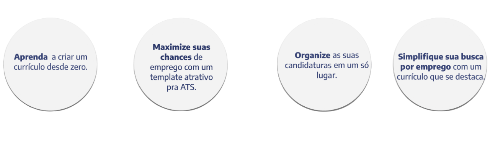

Um site gerador de currículos é uma ferramenta online que ajuda a criar currículos profissionais de forma rápida e fácil, fornecendo modelos pré-formatados e opções personalizáveis para os usuários.